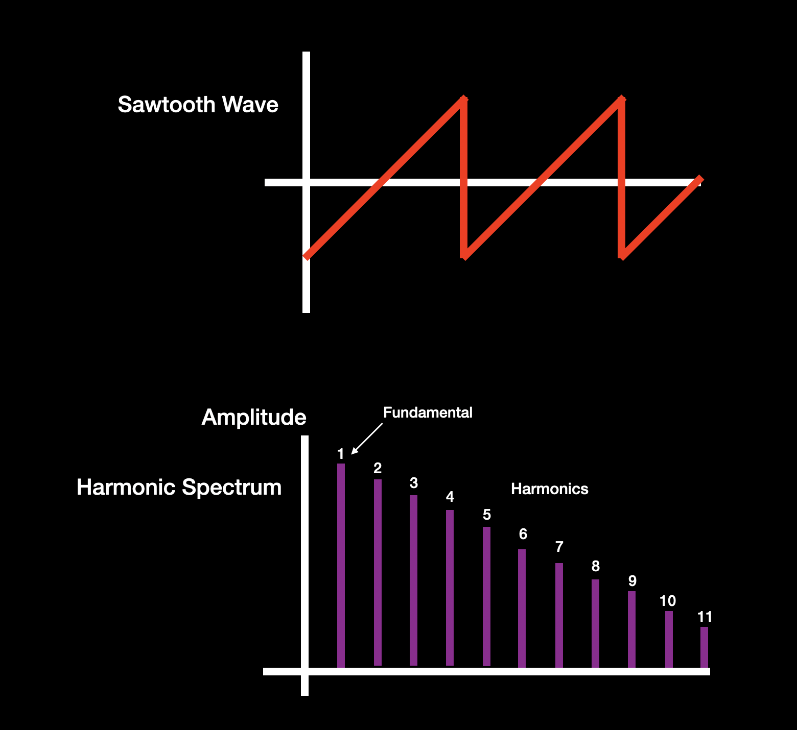
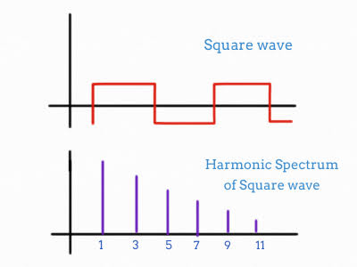
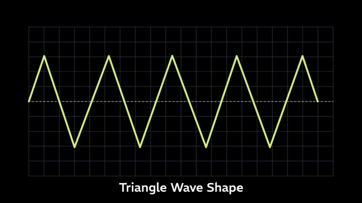

Clase 5: Síntesis
Clase 5: Síntesis
Nota sobre el entorno: Para esta clase vamos a seguir usando strudel.cc, pero existe una versión en desarrollo en warm.strudel.cc que tiene funciones experimentales que todavía no llegaron a la versión estable. Entre ellas está
fm8, un oscilador basado en FM de 8 operadores (similar al Yamaha DX7 real) que permite hacer FM mucho más compleja. Si quieren explorar eso después de la clase, es el lugar para hacerlo.
¿Qué es el sonido?

El sonido es una energía, una onda mecánica moviéndose en un medio y una sensación perceptiva, cómo nuestros cerebros y oídos interpretan esa onda. En el mundo real es un empuje de aire. En la guitarra, la señal que produce el empuja la cuerda, en la voz, las cuerdas vocales y todo esto es percibido por nuestros oídos.

Para quienes como yo, no recuerdan sus clases de física en el colegio. La onda mecánica es una perturbación física a través de un medio material (sólido, líquido o gaseoso) que transporta energía y cantidad de movimiento, sin transferir materia.
(a) Oscilación de presión, tensión, desplazamiento de partículas, velocidad de partículas, etc., propagada en un medio con fuerzas internas, o la superposición de dicha oscilación propagada. (b) Sensación auditiva evocada por la oscilación descrita en (a)" (ANSI/ASA S1.1-2013) Traducido
La síntesis
A diferencia de un instrumento acústico donde la perturbación del aire proviene de un objeto físico vibrando, en la síntesis utilizamos electricidad o código para generar y manipular señales que luego se traducirán en sonido. Nos permite diseñar instrumentos y timbres desde cero.

En síntesis digital, es el proceso de generar una señal de audio eléctrica mediante algoritmos o circuitos.
Tipos de Síntesis
Existen diversas familias de síntesis. En esta sesión abordaremos las cuatro principales que podemos aplicar en Strudel:
- Síntesis Aditiva: Consiste en construir un sonido sumando ondas simples (frecuencias fundamentales y armónicos).
- Síntesis Sustractiva: El proceso inverso; comienza con una onda rica en armónicos y recorta frecuencias específicas utilizando filtros.
- Síntesis de Tablas de Ondas (Wavetable): Utiliza muestras de audio muy cortas que se reproducen en bucle para generar sonido.
- Síntesis FM (Modulación de Frecuencia): Consiste en modular la frecuencia de un oscilador principal mediante otro oscilador, generando timbres complejos.
La serie armónica y los parciales
Para entender la estructura de las formas de onda, es necesario repasar el concepto de Serie Armónica.
Al tocar una nota (por ejemplo, Do2) en un piano, la cuerda vibra en su totalidad (frecuencia fundamental), pero también vibra simultáneamente en fracciones (mitades, tercios, cuartos). Estas vibraciones secundarias y de mayor frecuencia se conocen como parciales o armónicos.

Estos parciales siguen una relación matemática, dividiéndose en dos grupos principales que influyen directamente en la percepción del timbre:
- Los Armónicos PARES (2, 4, 8, 16…): Generan intervalos de octava. Al ser perfectamente consonantes, aportan calidez, redondez y estabilidad al sonido.
- Los Armónicos IMPARES (3, 5, 7, 9…): Generan intervalos diferentes (quintas, terceras, séptimas). Aportan mayor complejidad, fricción armónica y carácter.
El conjunto de todos estos armónicos sonando simultáneamente, y sus diferentes amplitudes relativas, es lo que nuestro oído percibe como un timbre único. Es lo que nos permite distinguir entre un piano y una trompeta tocando la misma nota fundamental.
Como veremos a continuación, algunas formas de onda omiten parciales específicos (por ejemplo, los pares), lo que altera radicalmente el timbre resultante.
En Strudel
Con la síntesis aditiva podemos utilizar código para controlar cada parcial independientemente y ajustar su amplitud, construyendo la forma de la onda final.
Oscilador vs. Osciloscopio
Para visualizar y escuchar el comportamiento de las ondas:
- Oscilador: Es el generador de la señal de audio (ej:
s("sine")).
s("sine") // El oscilador base en strudel se llama superdough
- Osciloscopio: Es una herramienta de visualización que muestra la forma de onda de la señal a lo largo del tiempo (ej:
._scope()). No genera sonido por sí mismo.
s("sine")._scope()
Las 4 Ondas Clásicas
La forma geométrica de estas ondas determina su contenido armónico y, en consecuencia, su timbre.
5.7.1. Onda senoidal (Sine)
.png)
Representa un movimiento armónico simple. No posee armónicos adicionales; toda su energía se concentra en la frecuencia fundamental.
s("sine")._scope()._spectrum()
5.7.2. Onda diente de sierra (Sawtooth)

Sube de forma lineal y cae abruptamente. Contiene todos los armónicos (pares e impares) en amplitudes decrecientes. Es un sonido muy rico en frecuencias, utilizado comúnmente en la síntesis sustractiva como base.
s("sawtooth")._scope()._spectrum()
5.7.3. Onda cuadrada (Square)

Alterna instantáneamente entre valores máximos positivos y negativos. Debido a su simetría, solo contiene armónicos impares. Su falta de armónicos pares le otorga un timbre más hueco.
s("square")._scope()._spectrum()
5.7.4. Onda triangular (Triangle)

Sube y baja a una velocidad constante formando un triángulo. Al igual que la cuadrada, solo contiene armónicos impares, pero la amplitud de estos armónicos decae de manera mucho más abrupta, sonando más pura.
// Activa uno a la vez (los dos juntos no funcionan correctamente):
s("triangle")._scope()
// s("triangle")._spectrum() // <- descomenta esta y comenta la anterior para ver el espectro
5.7.5. Ruido (White / Pink noise)
El ruido no tiene una frecuencia fundamental definida. Contiene todas las frecuencias al mismo tiempo, distribuidas de distinta manera según el tipo:
- White noise: Todas las frecuencias con la misma amplitud. Suena muy brillante, como estática de radio o una cascada.

- Pink noise: Las frecuencias graves tienen más energía que las agudas (la energía cae 3 dB por octava). Suena más cálido. Es el ruido que más se parece a sonidos naturales.

El ruido es fundamental para construir percusión sintética: un snare, un hi-hat y una caja de ritmos entera se pueden construir filtrando y envolveando ruido.
// Ruido blanco con envolvente — base de un snare
s("white").adsr("0:0.15:0:0.05")
// Ruido rosado (pink) con filtro — más cálido
s("pink").lpf(800).adsr("0:0.3:0:0.1")
Síntesis Aditiva con partials()
Hasta ahora hemos usado ondas predefinidas. Con la función partials() podemos construir un timbre desde cero, especificando cuánta energía tiene cada armónico de forma manual.
El primer valor es el fundamental, el segundo es el segundo armónico, el tercero el tercero, y así sucesivamente. Un valor 0 significa que ese armónico no suena.
// Filtramos una onda sierra para dejar solo el fundamental (suena como una senoidal pura)
note("c3").s("sawtooth").partials([1])
// Agregando armónicos uno por uno — escucha cómo cambia el timbre
note("c3").s("sawtooth").partials([1, 0.5, 0.25, 0.1])
Actividad: Construye tu propia onda
Modifica los valores del arreglo para intentar imitar el comportamiento de las ondas que ya conoces:
- La onda cuadrada tiene solo armónicos impares (posiciones 1, 3, 5…). Pon en 0 los pares.
- La onda de sierra tiene todos los armónicos con amplitud decreciente.
// Tu onda personalizada — modifica los valores para esculpir los armónicos:
note("c3").s("sawtooth").partials([1, 0, 0.33, 0, 0.2, 0, 0.14])
Envolventes de Amplitud (ADSR)
Los osciladores básicos producen una señal estática e infinita. En la realidad, el sonido de los instrumentos varía en el tiempo. Una cuerda percutida tiene un inicio abrupto y decaimiento rápido, mientras que un instrumento de arco puede tener un inicio gradual.
Para moldear el volumen de las señales a lo largo del tiempo, utilizamos las envolventes. El modelo estándar es el ADSR.

- A (Attack / Ataque): El tiempo que tarda el sonido en alcanzar su amplitud máxima después de ser activado.
- D (Decay / Decaimiento): El tiempo que tarda el sonido en pasar de la amplitud máxima al nivel de sostenido.
- S (Sustain / Sostenido): El nivel de amplitud que se mantiene constante mientras la nota siga activada. Es el único parámetro que representa un nivel y no un tiempo.
- R (Release / Liberación): El tiempo que tarda el sonido en desvanecerse hasta el silencio una vez que la nota deja de estar activada.
5.9.1. Controlando el ADSR en Strudel
En Strudel podemos usar los parámetros individuales .attack(), .decay(), .sustain() y .release(), o emplear la función agrupada .adsr("attack:decay:sustain:release").
Ejercicio práctico Aplicando una envolvente podemos convertir una onda diente de sierra sostenida en un sonido de tipo "pluck" (punteo corto).
// 1. Escucha la onda original (descomentando la línea con //)
// 2. Escucha el efecto de la envolvente con .adsr()
note("[c3 bb2 f3 eb3]*2")
.sound("sawtooth")
.lpf(600)
.adsr("0:0.1:0:0.2") // Attack 0, Decay 0.1s, Sustain 0, Release 0.2s
Actividad: Diseña una textura diferente
Usando el mismo patrón de notas, modifica los valores del ADSR para conseguir dos sonidos distintos:
- Un pad (textura de cuerdas o sintetizador sostenido): ataque lento, sustain alto, release largo.
- Un stab (acorde corto y percusivo): ataque casi cero, decay corto, sustain cero.
// Punto de partida — modifica attack, decay, sustain y release:
note("[c3 bb2 f3 eb3]*2")
.sound("sawtooth")
.adsr("0:0.5:0.8:1") // <- intenta transformar esto en un pad
Síntesis Sustractiva: Filtros
Si la síntesis aditiva es construir un sonido sumando parciales, la síntesis sustractiva consiste en tomar un sonido rico en armónicos (como una onda de sierra o cuadrada) y atenuar frecuencias específicas utilizando un filtro.
En Strudel, los filtros más comunes son:
.lpf(frecuencia)(Low-Pass Filter): Filtro pasa-bajo. Deja pasar las frecuencias graves y recorta las agudas. Muy utilizado para líneas de bajo..hpf(frecuencia)(High-Pass Filter): Filtro pasa-alto. Deja pasar las frecuencias agudas y recorta las graves..bpf(frecuencia)(Band-Pass Filter): Filtro pasa-banda. Deja pasar un rango específico de frecuencias, atenuando tanto graves como agudos.
Además de la frecuencia de corte, los filtros cuentan con un parámetro de resonancia (o factor Q). Si alguna vez has usado un ecualizador paramétrico, es exactamente el mismo concepto: el factor Q determina qué tan ancha o estrecha es la "campana" o el pico de frecuencias que estamos afectando. Un Q alto genera un pico muy estrecho y pronunciado justo en la frecuencia de corte, mientras que un Q bajo genera una curva mucho más suave.
En Strudel se controla con .lpq(), .hpq() o .bpq(). Esta resonancia amplifica la frecuencia exacta donde ocurre el corte, generando un sonido característico de sintetizadores clásicos como el TB-303.

Figura 4: Gráfico que muestra cómo distintos valores de Q afectan la resonancia alrededor de la frecuencia de corte.
// Cambia el valor del .lpf y .lpq para escuchar la diferencia
note("c2*4").s("sawtooth")
.lpf(400)
.lpq(15)
Actividad: Esculpe un bajo
Usando una onda de sierra como punto de partida, ajusta el filtro pasa-bajo y la resonancia para conseguir dos timbres distintos:
- Un bajo oscuro y cerrado (frecuencia de corte baja, sin resonancia).
- Un bajo con carácter ácido similar al TB-303 (frecuencia media, resonancia alta).
// Punto de partida — modifica .lpf y .lpq:
note("[c2 c2 eb2 g2]*2").s("sawtooth")
.lpf(300)
.lpq(5)
Síntesis FM (Modulación de Frecuencia)
La síntesis FM utiliza un oscilador para modular la frecuencia de otro oscilador. En lugar de usar filtros convencionales, esta técnica genera espectros armónicos complejos al variar la frecuencia a niveles muy rápidos.
Es especialmente útil para crear sonidos metálicos, campanas, pianos eléctricos o texturas que son difíciles de lograr con síntesis sustractiva (fue popularizada en los 80s por sintetizadores como el Yamaha DX7).
En Strudel, se utiliza .fm() para definir la cantidad de modulación (intensidad) y .fmh() para controlar la proporción armónica o frecuencia del oscilador modulador.
El siguiente bloque incluye diversos ejemplos de modulación de frecuencia programados por el artista glossing:
// Ejemplos de Síntesis FM
// @title FM youtube @by glossing
setcpm(170 / 4)
// 1. FM Básico: Modulando una onda Sawtooth
// $_: s("saw")
// .fm(slider(3.6, 0, 20))
// .fmh(slider(3.4645, 0.5, 4))
// 2. Reese Bass: Usando FM para engordar el sonido de un bajo
// $_: s("saw").note("F1")
// .fm(slider(0.996, 0, 3)).fmh("0.99, 1.01")
// .lpf(slider(4121.6, 200, 5000))
// .diode(1.3).compressor(-20)
// 3. Secuencia rítmica
// $: n(irand(12).seg(4)).scale("F:minor")
// .s("saw").rel(0.5)
// .fm(slider(0.084, 0, 1)).fmwave("pink")
// $: s("breaks/2").bank("fmdemo").fit().compressor(-20).soft(2).lpf(8000)
Nota: Créditos a Gossling por el código demostrativo y su video tutorial sobre síntesis FM en Strudel en https://www.youtube.com/watch?v=8ruLuZv1ju8
Actividad: Explora la síntesis FM
Descomenta cada sección del bloque anterior una por una (borra el // al inicio de cada línea). Antes de pasar a la siguiente, intenta responder:
- ¿Cómo cambia el timbre al subir el valor de
.fm()? - ¿Qué diferencia se nota entre un
.fmh()cercano a 1 y uno con valor 3 o 4? - ¿En qué se diferencia el Reese Bass del FM básico?
No hay una respuesta correcta — el objetivo es desarrollar el oído para reconocer cómo cada parámetro afecta el resultado sonoro.
Growl Bass
Un growl (en español, "gruñido") es una técnica de diseño sonoro que combina FM con un filtro en movimiento para generar una textura que imita el gruñido de un instrumento de viento o de una voz gutural. Es un sonido muy utilizado en drum and bass, neurofunk y tecnología de síntesis avanzada.
La clave está en usar .fm() con una cantidad moderada de modulación y dejar que el filtro (.lpf) haga el trabajo de modelar el carácter del gruñido. Al combinar ambos, la onda de sierra pierde sus frecuencias altas de manera dinámica, creando esa sensación de movimiento y agresión.
Para lograr el tono rasgado y vocal típico de Skrillex, no basta con FM básica. La clave es:
- Usar un filtro pasa-banda (
.bpf()) muy resonante en movimiento rápido para crear el efecto "vocal" (formantes). - Modular la propia cantidad de FM de manera dinámica, para que la distorsión cruja con el ritmo.
- Añadir mucha saturación para ensuciar la textura final.
// Skrillex Growl: FM Modulada + Filtro Pasa-banda rápido + Distorsión
note("f1(3,8)")
.s("sawtooth")
.fm(sine.range(1, 6).fast(2)) // FM modulando rápidamente
.fmh(0.5)
.bpf(sine.range(300, 2500).fast(4)) // Filtro vocal moviéndose
.bpq(20) // Alta resonancia para el efecto vowel (Yai/Yoi)
.distort(0.9) // Distorsión agresiva
.crush(8) // Bitcrush para añadir mugre digital
.adsr("0:0.1:0.5:0.1")